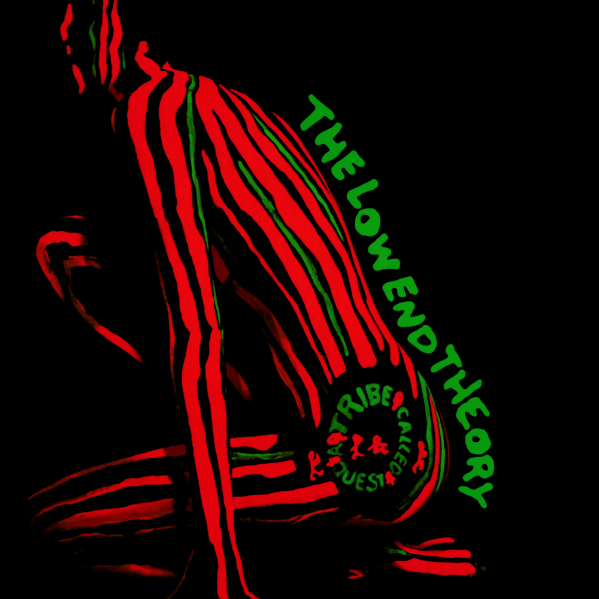
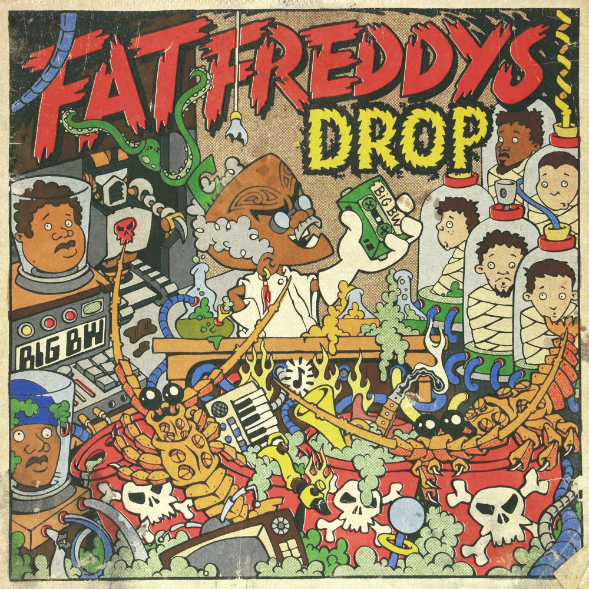
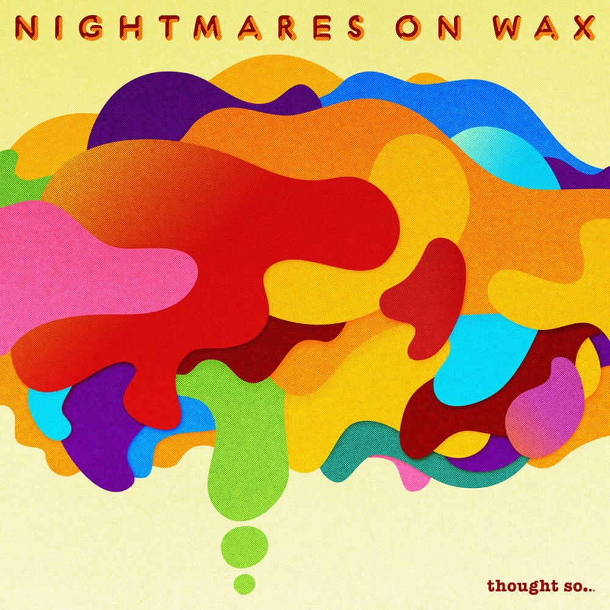

After working for a few years, I have decided to learn how to code before moving to Amsterdam in October.
Album cover |
Album Bio |
|---|---|
|  | A Tribe Called Quest - The Low End TheoryWhile most of the players in the jazz-rap movement never quite escaped the pasted-on qualities of their vintage samples, with The Low End Theory, A Tribe Called Quest created one of the closest and most brilliant fusions of jazz atmosphere and hip-hop attitude ever recorded. |
|  | Fat Freddy's Drop - Dr Boondigga and the Big BWWellington-based 'seven-headed soul monster' Fat Freddy’s Drop are renowned for taking their time to distil onstage jams into meticulously crafted studio creations, and once again that approach has paid off. Dr Boondigga & the Big BW is every bit as good as their last record. The music is still based firmly in their uniquely sweet, relaxed mix of soul, reggae and jazz, but peppered with diverse new flavours, some obviously picked up on their globetrotting tours. Crucially, none of these novel influences feel like they’ve been forced by fashion, and Fat Freddy's Drop still make music with an unmistakeably South Pacific swing. |
 | Nightmares On Wax - Thought so...Mostly written on the road as he made his way from Leeds to his new home in Ibiza, Thought So strips chill-out right down to the basics, a blissful, unhurried coast of clacking hip-hop breaks, sparse guitar and shimmering synthesiser grounded in Evelyn's main musical passions, vintage soul, jazz, and the late-night boom of the dub soundsystem. A handful of guest vocalists - Ricky Ranking, Chyna Brown and Ella May – add colour, if not any real narrative. |